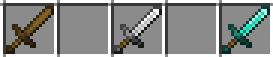
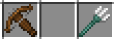

Outils et enchantements :
Outils :
Minecraft propose une variété d'arme pour se battre et pour miner, découvrons les !
1. Pioches : Les pioches sont cruciales pour extraire des blocs minéraux comme la pierre, le charbon et le diamant. Elles viennent dans une gamme de matériaux, du bois au diamant, chacun offrant une efficacité différente.

2. Haches : Les haches sont idéales pour abattre des arbres rapidement. Différents types de matériaux déterminent la vitesse et l'efficacité de l'outil. Une hache en diamant est particulièrement utile pour couper des arbres robustes.
3. Pelles : Les pelles sont essentielles pour creuser rapidement dans la terre et le sable. Que ce soit pour créer des tranchées ou collecter des ressources, une bonne pelle est un outil de survie indispensable.
4. Épées : Les créatures hostiles rôdent la nuit, et une épée bien forgée est nécessaire pour la défense personnelle. Du bois au netherite, le choix du matériau affecte la puissance de l'arme.
5. Houes : Les houes sont souvent négligées, mais elles sont essentielles pour cultiver des champs et récolter des cultures. Elles varient en efficacité en fonction du matériau utilisé.
6. Arcs : Pour les chasseurs habiles, l'arc est un outil de choix. Il permet de chasser des créatures à distance, offrant une alternative stratégique à l'épée dans certaines situations.
7. Cannes à pêche : Pour les amateurs de pêche, la canne à pêche est un outil relaxant. Elle permet de pêcher dans les rivières et les océans, récoltant du poisson et d'autres trésors aquatiques.
8. Arbalètes et Tridents : Pour ceux qui préfèrent la puissance de feu, l'arbalète offre des tirs plus précis, tandis que le trident permet de combattre les ennemis sous-marins avec style.
Conclusion : Que vous soyez un mineur passionné, un bâtisseur créatif, un chasseur agile ou un pêcheur tranquille, les outils de Minecraft sont vos compagnons indispensables. Choisissez judicieusement et prospérez dans ce monde cubique.
Enchantements :
Les enchantements représentent une dimension captivante et essentielle de l'univers de Minecraft, offrant aux joueurs la possibilité d'améliorer leurs armes, armures, outils et équipements en leur conférant des propriétés spéciales. Ces enchantements, magiques et variés, ajoutent une couche de profondeur stratégique au jeu, permettant aux joueurs d'optimiser leurs ressources, de personnaliser leur expérience de jeu et d'améliorer leur efficacité dans l'exploration, la survie et le combat. De la protection contre les dégâts aux capacités d'enflammer les ennemis, en passant par l'accroissement de la productivité des outils, chaque enchantement offre une opportunité unique d'ajouter une touche de magie à l'univers pixelisé de Minecraft. Dans cette immersion enchantée, explorons ensemble les différentes catégories d'enchantements qui façonnent le paysage des possibilités dans ce jeu emblématique.Enchantements d'armures :
- Protection - Réduit les dégâts subis.
- Fire Protection - Réduit les dégâts liés au feu.
- Blast Protection - Réduit les dégâts d'explosion.
- Projectile Protection - Réduit les dégâts de projectiles.
- Thorns - Renvoie des dégâts aux attaquants.
Enchantements d'armes :
- Sharpness - Augmente les dégâts infligés.
- Smite - Augmente les dégâts contre les morts-vivants.
- Bane of Arthropods - Augmente les dégâts contre les arthropodes.
- Fire Aspect - Enflamme les ennemis.
- Looting - Augmente les chances de butin des ennemis.
Enchantements d'outils :
- Efficiency - Augmente la vitesse d'utilisation des outils.
- Silk Touch - Permet de récupérer des blocs sans les transformer.
- Fortune - Augmente les chances de récolter plus de ressources.
Enchantements d'arcs :
- Power - Augmente la puissance de l'arc.
- Punch - Donne du recul aux cibles touchées.
- Flame - Enflamme les cibles.
- Infinity - Permet de tirer des flèches sans les consommer.
Enchantements divers :
- Unbreaking - Permet d'augmenter la durabilité des outils et armures.
- Mending - Répare l'outil ou l'armure en utilisant de l'expérience.
- Aqua Affinity - Permet de miner plus rapidement sous l'eau.
- Respiration - Augmente le temps que le joueur peut rester sous l'eau.
- Feather Falling - Réduit la vitesse de chute.
- Depth Strider - Permet de se déplacer plus rapidement sous l'eau.
N'oubliez pas que cette liste n'est pas exhaustive, car de nouveaux enchantements pourraient être ajoutés avec les mises à jour du jeu. De plus, certains enchantements peuvent ne pas être disponibles sur toutes les plates-formes ou modes de jeu.